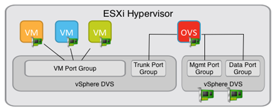
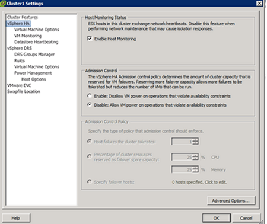

HP Helion OpenStack® 1.0: Deploying and Configuring OVSvApp on ESX hosts
HP Virtual Cloud Networking (VCN) is an enhanced Networking Operations (Neutron) service module of HP Helion OpenStack that delivers network virtualization to orchestrate your data center infrastructure.
The HP Virtual Cloud Networking Open vSwitch vApp (OVSvApp) appliance must be installed on each ESX hypervisor in the HP Helion OpenStack environment to provision VMs in your VMware vCenter environment. Once deployed, the OVSvApp enables networking between the tenant Virtual Machines (VMs).
The deployment process includes the following basic steps:
- Uploading the OVSvApp file to one of the ESX hosts in your data center.
- Adding your settings to the configuration file so that the OVSvApp deployment script can clone the file on each host being managed by the overcloud controller.
- Running the deployment script.
The following topics in this section explain how to deploy and verify deployment of OVSvApp for VCN on ESX hosts.
- Prerequisites
- Deploying the OVSvApp
- Verifying your deployment
- Managing the HP VCN networking service
- Troubleshooting OVSvApp
- Cleaning up or deleting the OVSvApp
- Uninstalling VCN on ESX hosts
- Update OVSvApp
- Next Steps
Prerequisites
Before you install the OVSvApp, ensure the following:
The HP Helion OpenStack must be installed and configured.
The VMware vSphere® platform must be installed and configured.
The vCenter server must be reachable from the server where OVSvApp VM installation is launched.
Unset the
https_proxyenvironment variable on the server where OVSvApp VM deployment will be launched, using the following command:unset https_proxy
The two Virtual Distributed Switches (VDS) must be configured.
Automatic DVS configuration: If the
is_auto_dvsvalue in theovs_vapp.inifile is set to true, the VDS will be configured during the deployment. Automatic configuration requires ESX 5.1 or greater. To consume this functionality,in addition to the data VLANs in the uplink, the ESX management VLAN should also be allowed. If an existing ESX management network is in a different uplink, the new L2 network should be created for the ESX compute proxy and ovsvapp VM consumption.Manual DVS configuration: If the
is_auto_dvsvalue in theovs_vapp.inifile is set to false, you need to create and configure the VDS as given below. Manual configuration requires ESX 5.0.0 or greater.There must be two Virtual Distributed Switches (VDS) and they are configured as follows:
VDS1: This switch has no uplink ports configured and has a portgroup of type VLAN with Trunking enabled. The portgroup must contain the list of VLAN tags that are used by overcloud Networking Operations (Neutron) service. The Promiscuous Mode and Forged Transmits options must be set to Accept under the Security tab for the Portgroup.
Note: The name of VLAN trunk portgroup must be associated with
trunk_interfaceparameter in theovs_vapp.ini. You will create the INI file in Modify and execute the installer.VDS2: This switch should have an uplink port connecting to the overcloud baremetal network. Two portgroups should be available for this switch - management, data. Management portgroup handles the management traffic and may or may not be not configured for VLAN.
The data portgroup should be of type VLAN with
Trunking enabled. It should contain the list of VLAN tags that are used by overcloud Networking Operations service. The Promiscuous Mode and Forged Transmits options should be set to Accept under the Security tab for the data portgroup.Note: You will need this information for a configuration file,
ovs_vapp.ini. The management portgroup must be associated withmgmt_interface parameterand the data portgroup must be associated withdata_interfaceparameter in theovs_vapp.ini. You will create the INI file in Modify and execute the installer.
Example:
VDS1 - trunk portgroup name - vlan_trunk VDS2 a. Portgroup1 name - mgmt b. Portgroup2 name - data Changes in ovs_vapp.ini for the above values [network] data_interface={'vmxnet3':'data'} mgmt_interface={'vmxnet3':'mgmt'} trunk_interface={'vmxnet3':'vlan_trunk'}Use the following diagram for reference: 
Notes for deploying OVSvApp VM onto ESX hypervisors
The ESX version required depends upon how VDS is deployed, as described in [Prerequisites](#prereqs}.
Please make sure that ESX host does not have another iteration of the OVSvApp already deployed.
The ESX host must be reachable from the server where OVSvApp VM installation is launched. The ipaddress of the ESX hosts should be the same ipaddress with which the vCenter server manages that host. For more information see Preparing the network for an ESX installation in Prerequisites.
All ESX hosts must have synchronized time settings. If hosts have different time, the deployment will fail.
Use the vShpere client to select Disable: Allow VM power on operations that violate availability constraints as a part of cluster settings, as shaown. If not, ESX host might hang at 2% during transition to maintenance mode.

If VDS will be configured automatically (
is_auto_dvs = True) the installer requires one physical NIC name as input. This physical NIC must be unused(not part of any VSS or VDS) and its name should be same across all ESX hosts within a datacenter.The traffic between two tenant VMs on the same network and on the same ESX Compute host cannot be blocked. If custom security groups are used, add explicit security group rules to allow traffic between the VMs, regardless of the compute host they are provisioned on. Using rules to allow traffic will help maintain VM connectivity.
Deploy the OVSvApp
You must upload the OVSvApp appliance to one of the ESX hosts that is hosting VMs provisioned from HP Helion OpenStack environment. You must then configure the settings in the configuration file. The file can be used to clone and deploy OVSvApp on each host being managed by the controller.
The deploy process installs the OVSvApp as a virtual machine, which is referred to as OVSvApp VM in this document.
Note
- The OVSvApp VMs must be installed on each ESX hypervisor.
- IP address are assigned to the OVSvApp VMs manually. The Administrator must keep a separate pool of IP addresses from the management VLAN to be assigned to the OVSvApp VMs. These IP addresses must be assigned to the Ethernet interfaces connecting to Management Port Group.
- The management portgroup for OVSvApp VM must be different than the Compute proxy management portgroup.
- Specify distributed virtual switch (VDS) ports in the
ovs_vapp.ini. Make sure the VDS ports are attached with the proper hosts.
The deploy process installs the OVSvApp as a virtual machine, which is referred to as OVSvApp VM in this document.
- Create a VM template in vCenter
- Install the prerequisite python libraries
- Modify and execute the installer
Create a VM template in vCenter
The first step in deploying the OVSvApp is to create a VM template that will make it easier to deploy the OVSvApp on each ESX hypervisor.
To deploy the OVSvApp:
Create a directory
/ovsvappon any server in the Helion environment and uploadovsvapp-1.0.1.tgz. Extract theovsvapp_1.0.1.tgzand locate thehp-ovsvappdirectory. In the directory, locateovercloud_esx_ovsvapp.ova. This is the OVSvApp appliance.Use the vSphere client to upload the
overcloud_esx_ovsvapp.ovafile to one of the ESX hosts in your data center:a. In the vSphere Client, click File > Deploy OVF Template.
b. Follow the instructions in the wizard that displays to specify the data center, cluster, and node to install onto. Refer to the VMWare vSphere documentation, as needed.
The installer creates the OVSvApp appliance (VM) on the specified node. The appliance is listed in the left column of vCenter, by default named
overcloud-esx-ovsvapp-(build number).Add a CD-ROM device to the OVSvApp appliance using the vCenter.
a. In the vSphere Client, right-click the OVSvApp appliance.
b. Click Edit Settings.
c. Select the Hardware tab and click Add.
d. Select DVD/CD-ROM Drive.
e. Follow the instructions in the wizard that displays.
Refer to the VMWare vSphere documentation, as needed.
Enable the Virtual Machine Communication Interface (VMCI), a high-speed communication channel between a virtual machine and the ESX hypervisor.
a. On the Hardware tab, select Enable VMCI Between VMs. The Hardware tab should be open from the previous step.
b. Click OK.
Power on the OVSvApp appliance using vCenter. The default credentials to login to the OVSvApp appliance are
stack/stack.Install the VMWare tools in the OVSvApp appliance:
a.In the vSphere Client, right-click the OVSvApp appliance.
b. Select Guest > Install/Upgrade VMware Tools.
Launch the OVSvApp appliance console to install the VMware Tools from command line terminal:
a. Right-click the OVSvApp appliance and select Open Console.
b. Enter the following commands:
sudo su mkdir /mnt/vmware-tools mount /dev/cdrom/ /mnt/vmware-tools cp -f /mnt/vmware-tools/VMwareTools-*.tar.gz /tmp/ cd /tmp tar -zxpf VMwareTools-*.tar.gz cd vmware-tools-distrib/ ./vmware-install.pl --defaultVerify that VMWare Tools is running using the following command:
service vmware-tools statusDo not proceed with the installation if VMWare Tools is not running.
When the installation completes, shutdown the OVSvApp appliance.
Disable the VMCI:
a. Right-click the OVSvApp appliance.
b. Click Edit Settings.
c. Remove the CD/DVD drive.
d. Clear the Enable VMCI between VMs option.
Convert that OVSvApp appliance to template format.
a. Right-click the OVSvApp appliance.
b. Click Template > Convert to Template.
vCenter Server marks that virtual machine as a template and displays the task in the Recent Tasks pane.
Install the prerequisite python libraries
On the server where you extracted the ovsvapp_1.0.1.tgz file, install the pyvmomi pyvmomi package.
pyVmomi is the Python SDK for the VMware vSphere API that allows you to manage ESX, ESXi, and vCenter.
Modify and execute the installer
On the server where you extracted the ovsvapp_1.0.1.tgz file, locate the ovs_vapp.ini file.
Modify the
ovs_vapp.inifile by adding settings for cloning and configuring OVSvApp VMs:a. Locate the
ovs_vapp.inifile in the/ovsvapp/hp-ovsvapp/confdirectory.b. Add VMware settings.
[vmware] #VCenter IP vcenter_ip= #Vcenter FQDN(Provide FQDN, only if your vcenter certificate is generated with FQDN)(*OPTIONAL) vcenter_fqdn= #Vcenter username vcenter_username= #Vcenter password vcenter_password= #Vcenter HTTPS Port vcenter_https_port= #Datacenter name datacenter= #Clusters on which OVSvAPP will be hosted clusters= #SSL Communication Settings between OVSvAPP and Vcenter(*OPTIONAL) cert_check= #Certificate Path. Must required if cert_check=True(*OPTIONAL) cert_path= [new-host-addition] #Keep this field False for Fresh Installation add_new_hosts= #Hosts in the given cluster are already added to DVS ? True if already part of DVS. False If you want to add. host_in_dvs= #If host_in_dvs=False then Except *OPTIONAL each and every other fields are mandatory.c. Add network port settings.
[network] #Tenant network type(vlan/vxlan) tenant_network_type=vlan #Do you want to use PCI Pass through. is_pci_passthrough= #If you want to use existing DVS and don't want to create DVS automatically then make it False is_auto_dvs= #Unused Physical NIC (same nic across all hosts) to be used for uplink DVS. Make sure no VSS or VDS is using this NIC(*Not required if is_auto_dvs=False). nic_name= #Trunk and Uplink DVS name. For vxlan trunk DVS name will be changed automatically to <DVS_Name>_<ClusterName> (*Not required if is_auto_dvs=False) trunk_dvs_name= #*Not required if is_pci_passthrough=True uplink_dvs_name= #Portgroup Names. For vxlan trunk port group will be automatically changed to <Port_Group_Name>_<ClusterName>. For vxlan if is_auto_dvs is false then #manually all the trunk port group name has to be <Trunk_Portgroup_Name>_<Cluster_Name>. And user has to input #only <Trunk_Portgroup_Name>. Because for several clusters we can not take all name as input. #Eg. {'<adapter_type>':'<port_group_name>'} trunk_interface={'':''} #Data and Mgmt Portgroups Name (*Not required if is_pci_passthrough=True) data_interface={'':''} mgmt_interface={'':''} #VLAN ID for Management Port group(*OPTIONAL) mgmt_vlan= #Start and End IP range for OVSvAPP start_ip_address= end_ip_address= #Netmask and gateway for OVSvAPP netmask= gateway_ip=Notes:
- The start IP address and the end IP address is the block of IPs that was reserved from the Management Network for OVSvApp deployment.
- The
trunk_interfacemust be the VLAN trunk portgroup, as described in the prerequisites. - The
data_interfacemust be the second portgroup, as described in the prerequisites.
d. Specify the name for cloning the OVSvApp.
[template] #Provide the template/appliance name that will be used for cloning template_name=e. Specify a name, the number of CPUs, and the amount of RAM for the deployed OVSvApp.
Note: During deployment, the
ovs_vm_namesetting is appended with each VM host name and IP address to appear as<ovs_vm_name>_<IP>.[vmconfig] #Number of CPUs for the OVSvAPP VM num_cpu= #Amount of RAM for the OVSvAPP VM(In MB) memory_mb= #SSH key file path for OVSvAPP password less login. ssh_key_path=f. Specify RabbitMQ settings.
[rabbitmq] #RabbitMQ host(Mulitple hosts can be given by comma separated value) rabbitmq_host= #RabbitMQ user rabbitmq_user= #RabbitMQ password rabbitmq_pass=Where:
- controller0 is overcloud controller0
- controller1 is overcloud controller1
- controllermgmt is overcloud controller management
g. Specify the IP address of your NTP server.
[ntp] ntp_server=h. Specify disaster recovery information.
[disaster-recovery] #If set to True(If you have a DRS enabled cluster), then on OVSvAPP crash/kernel panic the host will be put to maintenance mode. #Maintenance mode will trigger DRS to migrate the tenant VMS. If set to false, then esx host will be shut down along with all tenant VMs. (*OPTIONAL) esx_maintenance_mode=Note: The agent monitoring module monitors the OVSvApp agent and takes the following action when OVSvApp VM's kernel panic occurs.
- If set to true, OVSvApp VM is powered off and the ESX host is put in Maintenance mode.
- If set to false, the ESX host will be shut down along with all tenant VMs.
i. Specify the level for logging errors, and a log file location. Default file location is:
/var/log/ovsvapp_log.[logger] #Log level. Such as DEBUG, INFO log_level=DEBUGInvoke the installer using the following commands:
sudo su cd /hp-ovsvapp/src/installer/ python invoke_vapp_installer.pyThe installation log file will be located at
/hp-ovsvapp/log/ovs_vapp.log.
Verify your deployment
After the OVSvApp deployment script executes successfully, you can see the OVSvApp deployed on all the specified ESX hosts.
Login to the overcloud controller from the seed VM host:
ssh heat-admin@<ip overcloud controller>Switch to root.
Enter the following command.
source /root/stackrcEnter the following command.
neutron agent-listFor all the HP VCN L2 agents check whether agent alive status is :-). If the status is xxx for an agent then login to that OVSvApp using SSH Key provided in ovs_vapp.ini file, restart the
hpvcn-neutron-agentusing the following command:sudo service hpvcn-neutron-agent restartRe-verify the agent reporting in the overcloud controller by running the following command.
neutron agent-listAll agents should indicate alive status that is denoted by:-).
Manage HP VCN networking
Enter the following commands to stop and restart the HP VCN networking service (hpvcn-neutron-agent):
sudo service hpvcn-neutron-agent stop
sudo service hpvcn-neutron-agent start
Troubleshoot OVSvApp
If you are having issues with the installation or operation of the OVSvApp, review these tips:
Install prerequisite python library pyvmomi. You can install the library using the following command:
pip install --upgrade pyvmomiEven if pyvmomi is already installed, run the command again to update the library to get major fixes.
During installation of OVSvApp VMs on a large scale, OVSvApp VM can hang and installation might not proceed. If this happens, execute the
neutron agent listcommand. If the output shows a OVSvApp VM in thexxxagent state, rerun the installation for that specific failed OVSvApp VM by specifying the ESX host name in thenew_hostsfield under thenew-host-additionsection of theovs_vapp.inifile.In a multiple vCenter environment, during tenant VMs spawn, if a VM fails to spawn on one vCenter server and successfully spawns on another vCenter server, check for stale portgroups, which causes stale OVS Flows. If an OVSvApp agent needs to be restarted, the OVS flows might be slow to be restored. If that happens, restart the agent to stabilize the flows.
If DRS and HA are enabled on the cluster, VMs except OVSvApp VM will migrate to other ESX hosts.
If the
neutron agent listcommand shows a specific OVSvApp agent up and running, but you see an ESX host in maintenance mode, you can disable agent monitoring for the OVSvApp solution. To disable agent monitoring, add a flagenable_agent_monitorset tofalseasenable_agent_monitor = falseto the/etc/neuton/neutron.conffile. Restart the server to activate the value.Do not delete a tenant VM port via "neutron port-delete" command for a tenant VM.
If you experience issues while installing the VMWare Tools, try any of the following references for help:
For any issues while installing VMware Tools:
VMware Knowledge Base
VMware SupportFor any Operating System related issues:
hLinux BugzillaIn a scalable environment, portgroups might not get deleted when the
nova deletecommand is run.The VM port binding is with the host name of the OVSvApp VM on the ESX Compute host which provisioned the tenant VM.
When vCenter username <"vCenter_username"> has domain included, provide username details in username@domain format.
When
cert_checkis False,cert_pathshould be a blank field.For Helion ESX type install, do not attempt to revert the Overcloud nodes from 1.01 to 1.0 through the restore process. Restoring will power down the ESX hosts associated with the registered vCenter cluster.
Clean up or deleting the OVSvApp
To clean up or delete the OVSvAPP setup:
On the server where you extracted the
ovsvapp_1.0.1.tgzfile, locate thehp-ovsvapp/conf/ovs_vapp.inifile.Modify the
ovs_vapp.inifile by entering only the connection details in the [vmware] section.Note: You do not need to specify the
Clusters on which OVSvApp will be hostedvalue.Run the following commands and follow the instructions:
cd /hp-ovsvapp/src/cleanup/ python cleanup.pyThe installer presents
Select an option:
1. Delete all OVSvApps from a Datacenter 2. Delete all OVSvApps with Trunk and Uplink VDS from a Datacenter 3. Delete all OVSvApps from given Clusters 4. Delete a single or a comma separated list of OVSvAppFor option 3, you must enter the name of the clusters from which you want to delete the OVSvApp appliances. For option 4, you must enter the name of the OVSvApp applicances you want to delete, separated by a comma.
Uninstall OVSvApp VM on ESX hosts
To uninstall VCN on ESX hosts, access the ESX hosts from vSphere Client, and delete each OVSvApp VM.
Update OVSvApp
To update the OVSvApp from version 1.0 to version 1.01:
Make sure that DRS is enabled on the cluster on which 1.01 version of OVSvApp will be installed:
a. In the vSphere client, select the cluster in the vSphere Client inventory.
b. Right-click and select Edit Settings.
c. In the left panel, select General, and make sure Turn On vSphere DRS is selected.
d. Click OK.
Note: DRS safeguards tenant VM traffic from being black-holed.
Disable vMotion from vSwitch properties. This will prevent DRS from bringing back VMs on the host when the host is brought back from maintenance mode as in Step 4.
a. In the vSphere client, select the host in the vSphere Client inventory.
b. On the Configuration tab, select Networking.
c. Click Virtual Switch to display the virtual switches for the host.
d. Locate the virtual switch that has a VMkernel port group configured for vMotion, and click the Properties link.
e. On the Ports tab, select the port group that is configured for vMotion and click Edit.
f. On the General tab, clear the Enabled option for vMotion.
g. Click OK to close the port group Properties dialog, and click Close to close the vSwitch Properties dialog.
Place the ESX host on which the 1.01 version of OVSvApp will be installed into maintenance mode :
In the vSphere Client, right click on the ESX host and select Enter Maintenance mode.
All virtual machines on the host are migrated to different hosts when the host enters maintenance mode.
Exit maintenance mode.
In the vSphere Client, right click on the ESX host and select Exit Maintenance mode.
Delete the OVSvApp appliance:
a. Right-click the OVSvApp VM.
b. Select Delete.
On the controller, execute the following command to obtain the
ovsvapp_agent_id.neutron agent-listNote the ID.
On the controller, execute the following command to remove the entry from
neutron agent-list.neutron agent-delete <ovsvapp_agent_id>Where:
<ovsvapp_agent_id>is the OVSvApp ID obtained.Install 1.01 version of OVSvApp VM on that ESX host using the
add_new_hostsvariable under thenew-host-additionsection inovs_vapp.inifileadd_new_hosts=TrueInvoke the installer using the following commands:
sudo su cd /hp-ovsvapp/src/installer/ python invoke_vapp_installer.pyThe installation log file will be located at
/hp-ovsvapp/log/ovs_vapp.log.Re-enable vMotion on vSwitch properties of that ESX host.
a. In the vSphere Client, right click on the ESX host.
b. Click the Configuration tab.
c. In the Hardware section, click Networking.
d. Click Properties for the virtual switch where a VMkernel port has been configured.
e. In the dialog box that opens, select
vmkernelin the Ports tab and click Edit.f. Select Enabled next to vMotion.
g. Click OK.
Next Step
Install DNS as a service (DNSaaS) (Optional).
If you have not installed DNSaaS, see DNSaaS Installation and Configuration.
DNSaaS is our managed DNS service, based on the OpenStack Designate project, is engineered to help you create, publish, and manage your DNS zones and records securely and efficiently to either a public or private DNS server network.